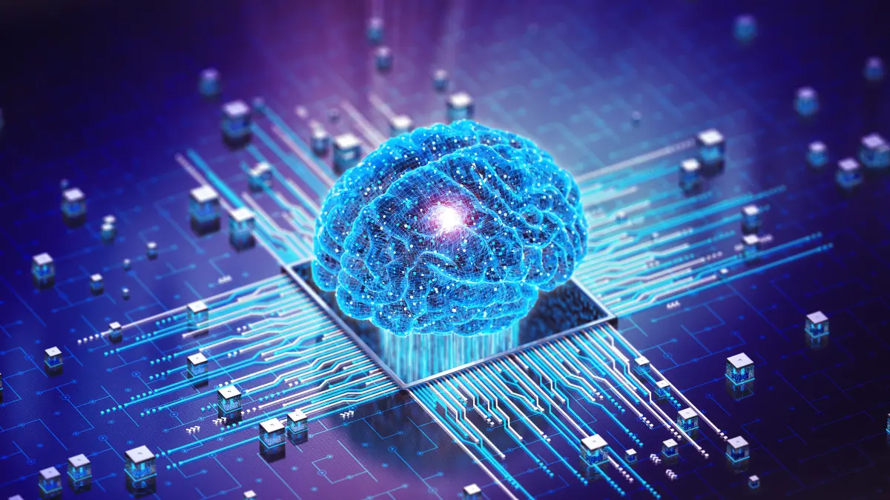

Inteligencia Artificial.

En la actualidad, las bases de datos inteligentes y la inteligencia artificial (IA) están interconectadas de manera fundamental, transformando la forma en que las empresas gestionan y utilizan la información. Esta sinergia es crucial en la era de los datos masivos, donde la cantidad de información generada es abrumadora y las prácticas tradicionales de gestión de datos ya no son efectivas.
Comportamiento de las Bases de Datos Inteligentes y la Inteligencia Artificial .

La integración de la inteligencia artificial en las bases de datos permite a las organizaciones
mejorar la eficiencia y la innovación. La IA puede analizar grandes volúmenes de datos en
tiempo real, detectando patrones y anomalías que son esenciales para la toma de decisiones
informadas
Esto no solo optimiza la gestión de datos, sino que también potencia la capacidad de las
empresas para adaptarse rápidamente a cambios en el mercado y en el comportamiento del
consumidor.

Las bases de datos inteligentes, impulsadas por IA, ofrecen varios beneficios clave:
- Análisis Predictivo: La IA permite realizar análisis predictivos, ayudando a las empresas a anticipar tendencias y comportamientos futuros
- Automatización de Procesos: La automatización de tareas de gestión de datos reduce la carga de trabajo manual y minimiza errores.
- Mejora en la Toma de Decisiones: Al proporcionar insights más profundos y precisos, las bases de datos inteligentes facilitan decisiones más informadas y estratégicas.
A pesar de los beneficios, la implementación de bases de datos inteligentes y IA también
presenta desafíos, como la necesidad de inversiones significativas en tecnología y la
capacitación del personal. Sin embargo, la tendencia es clara: la colaboración entre bases de
datos y IA seguirá evolucionando, cimentando una alianza vital para el futuro de la tecnología y
la gestión de datos.